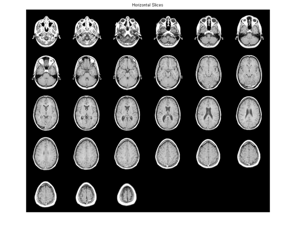
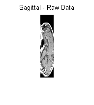
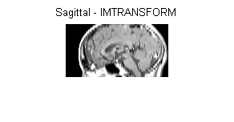
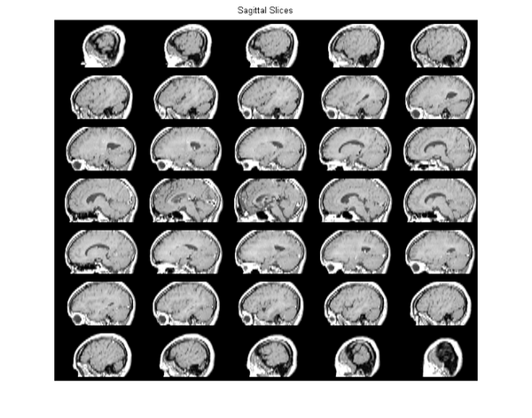
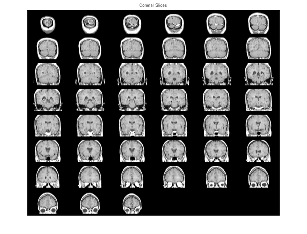

Exploring Slices from a 3-Dimensional MRI Data Set
The imtransform and tformarray functions can be used to interpolate and reslice a three-dimensional MRI data set, providing a convenient way to view a volume of data.
Contents
Step 1: Load and View Horizontal MRI
This demonstration uses the MRI data set that comes with MATLAB® and that is used in the help examples for both montage and immovie. Loading mri.mat adds two variables to the workspace: D (128-by-128-by-1-by-27, class uint8) and a grayscale colormap, map (89-by-3, class double).
D comprises 27 128-by-128 horizontal slices from an MRI data scan of a human cranium. Values in D range from 0 through 88, so the colormap is needed to generate a figure with a useful visual range. The dimensionality of D makes it compatible with montage. The first two dimensions are spatial. The third dimension is the color dimension, with size 1 because it indexes into the color map. (size(D,3) would be 3 for an RGB image sequence.) The fourth dimension is temporal (as with any image sequence), but in this particular case it is also spatial. So there are three spatial dimensions in D and we can use imtransform or tformarray to convert the horizontal slices to sagittal slices (showing the view from the side of the head) or coronal (frontal) slices (showing the view from the front or back of the head).
The spatial dimensions of D are ordered as follows:
- Dimension 1: Front to back of head (rostral/anterior to caudal/posterior)
- Dimension 2: Left to right of head
- Dimension 4: Bottom to top of head (inferior to superior).
An important factor is that the sampling intervals are not the same along the three dimensions: samples along the vertical dimension (4) are spaced 2.5 times more widely than along the horizontal dimensions.
Load the MRI data set and view the 27 horizontal slices as a montage.
load mri; montage(D,map) title('Horizontal Slices');
Step 2: Extract Sagittal Slice from Horizontal Slices Using IMTRANSFORM
We can construct a mid-sagittal slice from the MRI data by taking a subset of D and transforming it to account for the different sampling intervals and the spatial orientation of the dimensions of D.
The following statement extracts all the data needed for a midsagittal slice.
M1 = D(:,64,:,:); size(M1)
ans = 128 1 1 27
However we cannot view M1 as an image because it is 128-by-1-by-1-by-27. reshape (or squeeze) can convert M1 into a 128-by-27 image that is viewable with imshow.
M2 = reshape(M1,[128 27]); size(M2)
figure, imshow(M2,map);
title('Sagittal - Raw Data');
ans = 128 27
The dimensions in M2 are ordered as follows:
- Dimension 1: Front to back of head (rostral to caudal)
- Dimension 2: Bottom to top of head (inferior to superior).
We can obtain a much more satisfying view by transforming M2 to change its orientation and increase the sampling along the vertical (inferior-superior) dimension by a factor of 2.5 -- making the sampling interval equal in all three spatial dimensions. We could do this in steps starting with a transpose, but the following affine transformation enables a single-step transformation and more economical use of memory.
T0 = maketform('affine',[0 -2.5; 1 0; 0 0]);
The upper 2-by-2 block of the matrix passed to maketform, 0 -2.5;1 0], combines the rotation and scaling. After transformation we have:
- Dimension 1: Top to bottom of head (superior to inferior).
- Dimension 2: Front to back of head (rostral to caudal)
The call
imtransform(M2,T0,'cubic')
would suffice to apply T to M2 and provide good resolution while interpolating along the top to bottom direction. However, there is no need for cubic interpolation in the front to back direction, since no resampling will occur along (output) dimension 2. Therefore we specify nearest-neighbor resampling in this dimension, with greater efficiency and identical results.
R2 = makeresampler({'cubic','nearest'},'fill');
M3 = imtransform(M2,T0,R2);
figure, imshow(M3,map);
title('Sagittal - IMTRANSFORM')
 Step 3: Extract Sagittal Slice from the Horizontal Slices Using TFORMARRAY
In this step we obtain the same result as step 2, but use tformarray to go from three spatial dimensions to two in a single operation. Step 2 does start with an array having three spatial dimensions and end with an array having two spatial dimensions, but intermediate two-dimensional images (M1 and M2) pave the way for the call to imtransform that creates M3. These intermediate images are not necessary if we use tformarray instead of imtransform. imtransform is very convenient for 2-D to 2-D transformations, but tformarray supports N-D to M-D transformations, where M need not equal N.
Through its TDIMS_A argument, tformarray allows us to define a permutation for the input array. Since we want to create an image with:
- Dimension 1: Superior to inferior (original dimension 4, reversed)
- Dimension 2: Caudal to rostral (original dimension 1)
and extract just a single sagittal plane via the original dimension 2, we specify tdims_a = [4 1 2]. We create a tform via composition starting with a 2-D affine transformation T1 that scales the (new) dimension 1 by a factor of -2.5 and adds a shift of 68.5 to keep the array coordinates positive. The second part of the composite is a custom transformation T2 that extracts the 64th sagittal plane using a very simple INVERSE_FCN.
T1 = maketform('affine',[-2.5 0; 0 1; 68.5 0]); inverseFcn = @(X,t) [X repmat(t.tdata,[size(X,1) 1])]; T2 = maketform('custom',3,2,[],inverseFcn,64); Tc = maketform('composite',T1,T2);
Note that T2 and Tc take a 3-D input to a 2-D input.
We use the same approach to resampling as before, but include a third dimension.
R3 = makeresampler({'cubic','nearest','nearest'},'fill');
tformarray transforms the three spatial dimensions of D to a 2-D output in a single step. Our output image is 66-by-128, with the original 27 planes expanding to 66 in the vertical (inferior-superior) direction.
M4 = tformarray(D,Tc,R3,[4 1 2],[1 2],[66 128],[],0);
The result is identical to the previous output of imtransform.
figure, imshow(M4,map);
title('Sagittal - TFORMARRAY');
Step 4: Create and Display Sagittal Slices
We create a 4-D array (the third dimension is the color dimension) that can be used to generate an image sequence that goes from left to right, starts 30 planes in, skips every other plane, and has 35 frames in total. The transformed array has:
- Dimension 1: Top to bottom (superior to inferior)
- Dimension 2: Front to back (rostral to caudal)
- Dimension 4: Left to right.
As in the previous step, we permute the input array using TDIMS_A = [4 1 2], again flipping and rescaling/resampling the vertical dimension. Our affine transformation is the same as the T1 above, except that we add a third dimension with a (3,3) element of 0.5 and (4,3) element of -14 chosen to map 30, 32, ... 98 to 1, 2, ..., 35. This centers our 35 frames on the mid-sagittal slice.
T3 = maketform('affine',[-2.5 0 0; 0 1 0; 0 0 0.5; 68.5 0 -14]);
In our call to tformarray, TSIZE_B = [66 128 35] now includes the 35 frames in the 4th, left-to-right dimension (which is the third transform dimension). The resampler remains the same.
S = tformarray(D,T3,R3,[4 1 2],[1 2 4],[66 128 35],[],0);
View the sagittal slices as a montage (padding the array slightly to separate the elements of the montage).
S2 = padarray(S,[6 0 0 0],0,'both'); figure, montage(S2,map) title('Sagittal Slices');
Step 5: Create and Display Coronal Slices
Constructing coronal slices is almost the same as constructing sagittal slices. We change TDIMS_A from [4 1 2] to [4 2 1]. We create a series of 45 frames, starting 8 planes in and moving from back to front, skipping every other frame. The dimensions of the output array are ordered as follows:
- Dimension 1: Top to bottom (superior to inferior)
- Dimension 2: Left to right
- Dimension 4: Back to front (caudal to rostral).
T4 = maketform('affine',[-2.5 0 0; 0 1 0; 0 0 -0.5; 68.5 0 61]);
In our call to tformarray, TSIZE_B = [66 128 48] specifies the vertical, side-to-side, and front-to-back dimensions, respectively. The resampler remains the same.
C = tformarray(D,T4,R3,[4 2 1],[1 2 4],[66 128 45],[],0);
Note that all array permutations and flips in steps 3, 4, and 5 were handled as part of the tformarray operation.
View the coronal slices as a montage (padding the array slightly to separate the elements of the montage).
C2 = padarray(C,[6 0 0 0],0,'both'); figure, montage(C2,map) title('Coronal Slices');